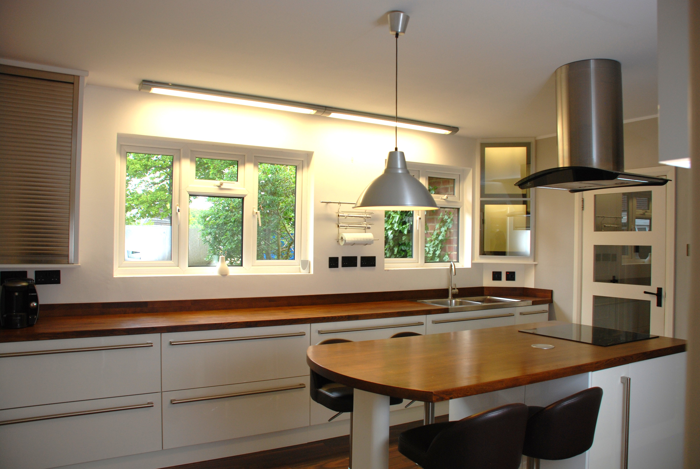
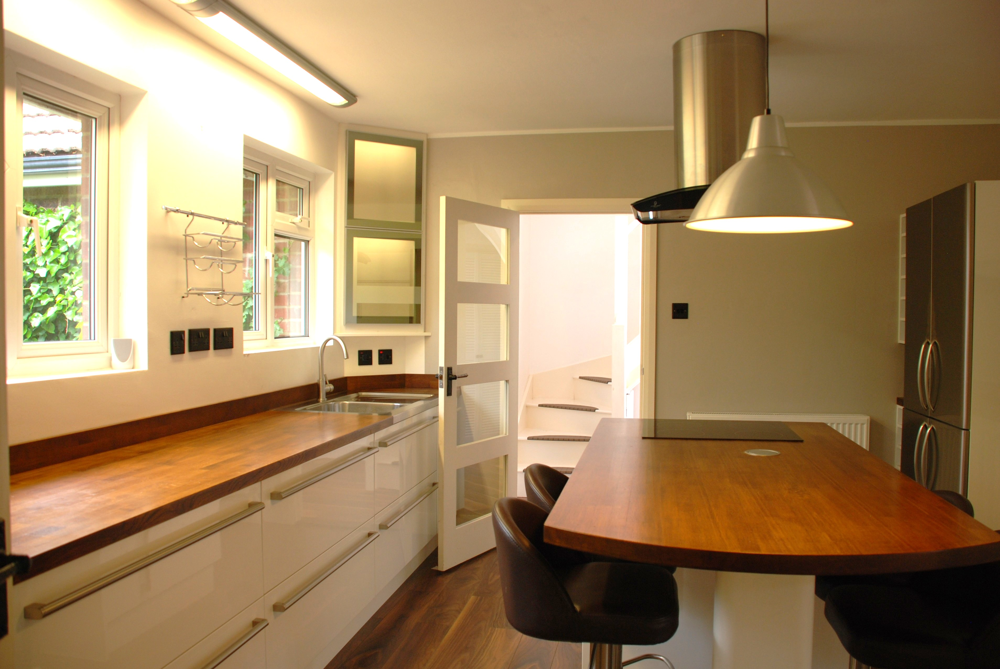
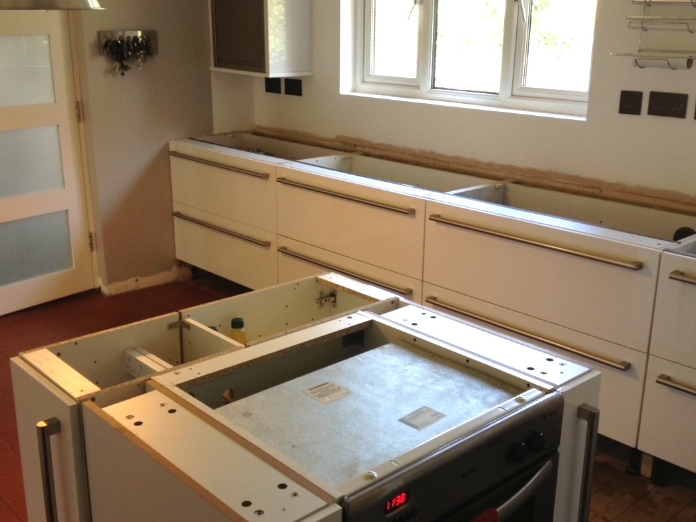
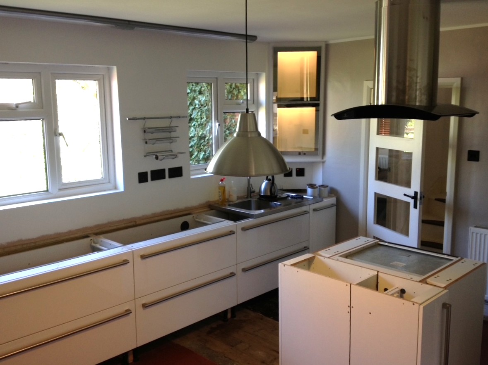

High Quality Affordable Kitchens
From brand-new installations to carefully reconfigured ex-display and reclaimed kitchens, every project is tailored to your home with an emphasis on design, quality, practicality and value.
Budget doesn't have to mean naff though. We specialise in re-purposing ex-display or reclaimed units to fit your kitchen layout. Why pay the design/supply/fit 'big-boys' £20k when you could have the same premium style and quality for just a few thousand pounds, typically with new worktops and often including new appliances?
Showroom kitchens are usually built to show off the best in cabinet styles and interiors and include top quality accessories such as hidden led lighting, soft close doors and drawers, clever pull-out storage and bins, tambour doors, real wood trims, pop-up sockets, etc. It's these extras that can make up big part of the cost of a new kitchen, but also what set it apart and really make it work. Examples below.
1. Gloss White Modern Kitchen
A contemporary ex-display, full-drawer kitchen carefully adapted and reconfigured to suit a completely different room.



